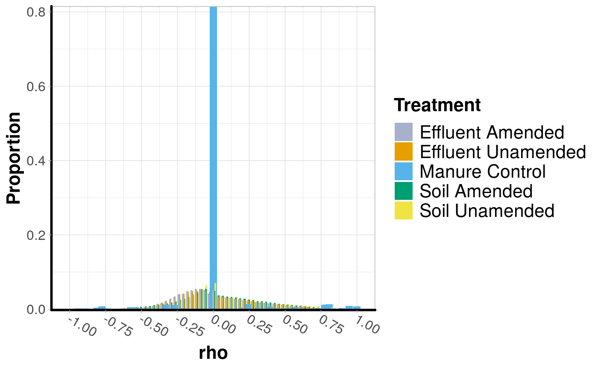
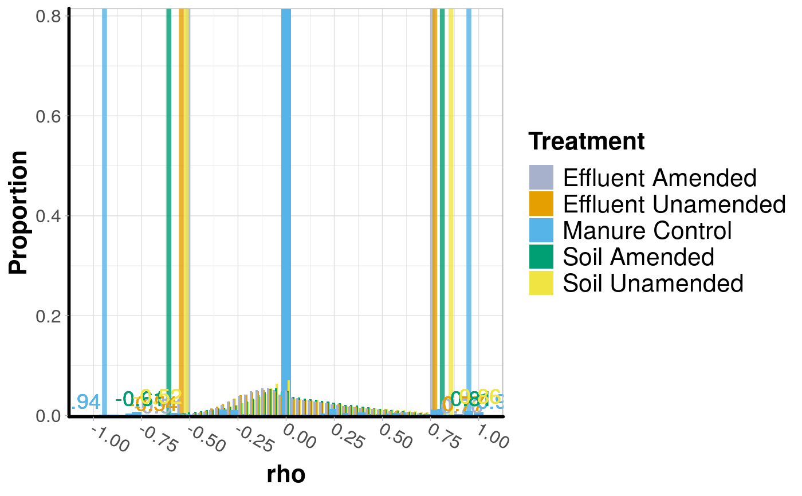

histogram_permuted_rhos.RdPlots the output of permute_rho into a
histogram with the distributions shown by treatment. This is a
visualization tool to help show how the permutation worked, and to see
where the cutoffs lie.
histogram_permuted_rhos(permuted_rhos, p = NULL, x_breaks = 0.25, colors = 'default')
| permuted_rhos | A |
|---|---|
| p | The significance threshold for setting cutoffs. |
| x_breaks | What intervals to set the ticks on the x-axis. |
| colors | Name of a color set from the RColorBrewer package or a vector palete of R-accepted colors. |
ggplot
permuted_rhos <- permute_rho(soil_column, treatment = c('Matrix', 'Treatment'), replicate_samples = 'Day', permutations = 1, cores = 0) histogram_permuted_rhos(permuted_rhos)histogram_permuted_rhos(permuted_rhos, p = 0.01)